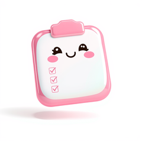

SugarTreelist
List view with box-drawing prefixes, cursor navigation, word-wrap, and live filtering

SugarTreelist is a list view for terminal UIs: box-drawing or line-number gutters, cursor navigation, whitespace-faithful word wrap, and live filtering. It ports the cursor, filter and render surface of charmbracelet/bubbles/list, and takes its gutter vocabulary from treilik/bubblelister. It is a renderer, not a TEA program: the component is a plain final class Model that your host program's view() calls into, and the host owns the keys, the input line and the chrome around the list.
Install
composer require sugarcraft/sugar-treelist:@devThe package has no tagged release yet, so it ships only dev-master, and the @dev constraint is required until the first version tag lands. The manifest requires PHP ^8.3. It pulls in sugarcraft/sugar-fuzzy for fuzzy scoring and psr/log for the optional LoggerInterface on view().
Quickstart
use SugarCraft\TreeList\Model;
// Model::tree() is new() plus the Default prefixer and suffixer pair: a
// line-number gutter and a visible cursor marker.
// Every with*() returns a NEW Model, so rebind the result.
$model = Model::tree()
->withViewport(80, 25)
->withItemsFromArray(['Apple', 'Banana', 'Cherry', 'Dragonfruit', 'Elderberry']);
echo $model->view();
// Move the cursor down two items. Reset the delta memo so this paints a full
// frame instead of a positional delta.
$model = $model->withCursor(2);
$model->resetPreviousFrame();
echo $model->view();Running this prints a five-row list with > and < around the cursor row. The full program is examples/basic.php.
Concepts
A Model holds three things: the item list, a viewport of width cells by height lines, and a cursor that addresses items by index. Items are \Stringable values, and plain strings are accepted directly. One item can occupy several rows once it wraps, so cursorIndex() counts items and never rows. The viewport scrolls only as far as needed to keep the cursor visible, with a cursorOffset gap kept above it.
Rendering runs through two prefixers and suffixers. A Prefixer produces the left gutter for each line, and a Suffixer produces the right-hand decoration. DefaultPrefixer draws the box-drawing gutter, and DefaultSuffixer draws the cursor marker. You can replace either with your own class that implements the interface. A filter is a live view over the items: withFilterFn() projects the list, and the original items stay in place until withoutFilter() restores them.
Tasks
Filter the list as the user types
Call withFuzzyFilter() with the current query on every keystroke. It always filters the whole original list, so widening the query brings items back. An empty query clears the filter. Use withFilterFn() when you need a predicate of your own.
use SugarCraft\TreeList\Model;
$model = Model::tree()
->withViewport(60, 12)
->withItemsFromArray(['apple', 'banana', 'cherry', 'apricot', 'blueberry']);
// Keep items whose characters contain the query in order.
$filtered = $model->withFuzzyFilter('ap'); // apple, apricot
$filtered = $filtered->withFuzzyFilter(''); // empty query clears the filter
$filtered = $model->withFilterFn(fn(\Stringable $item) => str_starts_with((string) $item, 'b'));Rank candidates by fuzzy score
FuzzyMatch scores candidates with the Smith-Waterman matcher from sugar-fuzzy and returns [item, score] pairs, best first. Equal scores keep their input order. Pass a limit to keep only the best N.
use SugarCraft\TreeList\FuzzyMatch;
use SugarCraft\TreeList\StringItem;
$matcher = new FuzzyMatch();
$hits = $matcher->match('ap', [new StringItem('apricot'), new StringItem('banana')], 1, 5);
// $hits is [[apricot, 11], [banana, 3]]: the best match first. Banana stays
// because it still aligns with the 'a'; raise $minScore to drop weak hits.
foreach ($hits as [$item, $score]) {
echo (string) $item, ' scored ', $score, "\n";
}Move the cursor from host key events
The library binds no keys. Map your framework's key names onto the cursor methods in the host. Every movement saturates at the list ends, so a page or end jump never wraps and never overflows.
use SugarCraft\TreeList\Model;
function onKey(Model $list, string $key): Model
{
return match ($key) {
'up' => $list->withCursorUp(),
'down' => $list->withCursorDown(),
'pageup' => $list->withCursorPageUp(),
'pagedown' => $list->withCursorPageDown(),
'home' => $list->withCursorToStart(),
'end' => $list->withCursorToEnd(),
default => $list,
};
}Swap the gutters
Attach a configured DefaultPrefixer and DefaultSuffixer, or your own classes. The default glyph knobs refuse control bytes, so a glyph can never carry an escape sequence. examples/custom-styling.php shows a complete custom pair.
use SugarCraft\TreeList\{DefaultPrefixer, DefaultSuffixer, Model};
$model = Model::new()
->withViewport(80, 25)
->withPrefixer(DefaultPrefixer::new()->withNumber(false)->withCurrentMarker('*'))
->withSuffixer(DefaultSuffixer::new()->withCurrentMarker('<'));Render plain text for a screen reader or a log
lines() returns the laid-out rows with no delta bookkeeping and no styling, so it is the right door for assistive and scripted output. It throws on an empty list, so guard with isEmpty() first.
$model = $model->withLineStyle('')->withCurrentStyle('');
if (!$model->isEmpty()) {
foreach ($model->lines() as $row) {
echo $row, "\r\n";
}
}API reference
The classes below are the public surface. Item is internal and is not listed. Model methods come in two spellings: the with*() setters are canonical, and the older set*(), add*() and cursor*() names are @deprecated one-way aliases that return new instances and are removed in 2.0.0.
| Class | Method | Description |
|---|---|---|
Model | new() / tree() | Undecorated model, or the model with the Default prefixer and suffixer pair installed. |
Model | withWidth(int) / withHeight(int) / withViewport(int, int) | Set the viewport in cells and lines. Dimensions are bounded by MAX_DIMENSION and MAX_TOTAL_CELLS. |
Model | withItem(string|\Stringable) / withItems(...) / withItemsFromArray(array) | Append items. The array form is one clone and one filter re-apply for the whole batch. |
Model | removeItem(int) / clear() / sort() | Remove one item, empty the list, or sort it by the withLessFunc() comparator. With no comparator set, sort() returns $this. |
Model | withLessFunc(?\Closure) / withEqualsFunc(?\Closure) | Plug in the ordering and equality used by sort() and find(). |
Model | withPrefixer(Prefixer) / withSuffixer(Suffixer) | Attach the gutter classes that build each row's prefix and suffix. |
Model | withLineStyle(string) / withCurrentStyle(string) | Set the SGR parameters for ordinary and cursor rows. Non-SGR input is refused. |
Model | withCursor(int) / withCursorUp(int = 1) / withCursorDown(int = 1) | Move the cursor by item index. Each one clamps to the list ends. |
Model | withCursorPageUp(int = 1) / withCursorPageDown(int = 1) | Move by whole pages of height items, not displayed lines. |
Model | withCursorToStart() / withCursorToEnd() | Jump to the first or last item. |
Model | cursorIndex() / cursorItem() / tryCursorItem() | The cursor's item index, the item itself (throws on an empty list), or the item or null. |
Model | withFilterFn(\Closure) / withoutFilter() | Project the list through a predicate, and restore it. withoutFilter() returns $this when no filter is active. |
Model | withFuzzyFilter(string, ?ScoringProfile = null) / withoutFuzzyFilter() | Keep the items whose characters contain the query in order. An empty query clears the filter. |
Model | filterState() | The current ?FilterState. It is null until the first withFilterFn() call. withoutFilter() sets it to unfiltered only when a filter was active, so a list that was never filtered stays null. |
Model | length() / isEmpty() / itemAt(int) / tryItemAt(int) | Read the visible projection. Indices follow the active filter. itemAt() throws on an out-of-range index. |
Model | find(string|\Stringable) / tryFind(string|\Stringable) / itemIds() | The visible index of an item (-1 when absent, or null from tryFind()), and the stable ids of the visible items. |
Model | lines() / eachLine() | The laid-out rows, with no delta bookkeeping. lines() throws a localized RuntimeException on an empty list, a zero viewport, or gutters that use up every column. |
Model | view(?LoggerInterface $logger = null) | Render the frame. The first call, and any call after resetPreviousFrame(), emits a full frame. Later calls emit only changed rows. view() never throws; a failure becomes the swept message. |
Model | resetPreviousFrame() | Drop the delta memo so the next view() repaints the full frame. The one void member, and the only mutation besides view(). |
FuzzyMatch | new(?ScoringProfile, int $maxCandidateLength, bool $strictMode) | The fuzzy matcher. Its defaults match the sugar-fuzzy Smith-Waterman matcher. |
FuzzyMatch | score(string $query, string $candidate): int | The alignment score. A canonical example: 'april' against 'apricot' scores 27. |
FuzzyMatch | match(string $query, array $items, int $minScore = 1, ?int $limit = null): array | [item, score] pairs, best first, equal scores in input order. A negative limit throws. |
FuzzyMatch | matchGenerator(...) | The same ranking as a generator. |
FilterState | unfiltered / filtering | No filter is active, or a filter function is set and applied. |
DefaultPrefixer | new() plus withNumber(), withNumberRelative(), withNumberZeroBased(), withFirstSep(), withSeparator(), withLastSep(), withSeparatorWrap(), withCurrentMarker(), withEmptyMarker(), withPrefixWrap() | The box-drawing gutter and its knobs. Each setter returns a new instance. |
DefaultSuffixer | new() / withCurrentMarker(string) | The cursor marker that follows the cursor row. |
Prefixer | initPrefixer(...) / prefix(int, int) | The interface a custom gutter implements. initPrefixer() returns the cell width the gutter reserves. |
Suffixer | initSuffixer(...) / suffix(int, int) | The interface a custom suffix implements, with the same width contract. |
StringItem | new(string) / __construct(string) | Wraps a plain string as a list item, for typed slots. |
ScoringProfile | canonical() / strict() / lenient() | @deprecated class_alias of SugarCraft\Fuzzy\ScoringProfile, which is the source of truth. New code should use sugar-fuzzy directly. |
Lang | t(string $key, array $params = []) | Translates the library's refusal messages through SugarCraft\Core\I18n\T. |
Configuration and options
There is no configuration file or environment variable. Every option is a with*() setter on the model, and every setter returns a new instance.
| Option | Setter | Default | Effect |
|---|---|---|---|
| Width | withWidth(int) | 80 | Viewport width in cells. Long items wrap to fit it, and the terminal width is never detected. |
| Height | withHeight(int) | 24 | Viewport height in lines. A page is this many items. |
| Cursor offset | withCursorOffset(int) | 5 | Gap kept between the cursor and the viewport edge. Render clamps it so it never exceeds the viewport. |
| Line offset | withLineOffset(int) | 5 | How many lines above the cursor the view shows. |
| Wrap cap | withWrap(int) | 0 | Maximum lines per item. 0 means no cap. |
| Line style | withLineStyle(string) | '' | SGR parameters for ordinary rows. Empty emits no color. |
| Current style | withCurrentStyle(string) | '' | SGR parameters for the cursor row. Empty emits no color. |
| Fuzzy candidate cap | FuzzyMatch::new($profile, $maxCandidateLength) | 1000 | Characters of each candidate that the matcher searches. Text past the cap is not scored, so one hostile item cannot stall the list. |
| Strict mode | FuzzyMatch::new(strictMode: true) | off | Full-query coverage: every query character must land, in order. This is the sugar-fuzzy requireFullQuery door. withStrictMode() sets it on an existing matcher. |
Keys and input
The library binds no keys, by design. Up, Down, PageUp, PageDown, Home and End map to the cursor methods in your host, as the Tasks section shows. Filter text comes from a text box you own, which passes its contents to withFuzzyFilter() or withFilterFn(). A v-style chord from bubbles/list is left outside the port.
Theming and styling
Styles come from the caller. withLineStyle() and withCurrentStyle() take SGR parameters such as 1;3, not full escape sequences. Each value passes through a sanitize-then-reject gate: a stray leading escape is trimmed, and anything that is not a parameter list is refused. The glyph knobs on DefaultPrefixer and DefaultSuffixer refuse control bytes when they are set.
src/Support/AssertGlyph.php is the shared validator behind those glyph knobs, so both Default gutters refuse control bytes in one place.
The library emits no color of its own, and it neither reads nor acts on NO_COLOR. Pass empty style strings to emit none. Item text passes through the frame choke, a private sanitizer that Model applies before it draws any row, so an item cannot forge a frame or a control sequence. Keep a marker glyph as well as a color, so the cursor position survives a monochrome terminal.
Examples
Each example is a standalone script under examples/ and runs on its built-in input. The matching demo GIF is re-rendered by CI from the tape under .vhs/.
examples/basic.phprenders five fruit names with the Default gutters, then moves the cursor and repaints.examples/custom-styling.phpplugs a hand-written star prefixer and a cursor-marker suffixer into a plainModel::new().examples/long-items.phprenders four descriptions in a 60-column viewport. Only the second and third wrap across several rows; the first and fourth fit on one row.
php examples/basic.php
php examples/custom-styling.php
php examples/long-items.php
Cursor navigation
Box-drawing gutter with cursor movement, repainted as a full frame after resetPreviousFrame().
Custom styling
Hand-written star prefixer and suffix marker plugged into the same list.
Word wrap
Long items wrap at the viewport width, with continuation rows under the gutter.Testing
composer install
vendor/bin/phpunitThe suite covers the model (ModelTest), the delta renderer (RowDeltaTest), the two default gutters, the fuzzy matcher, the filter state, and the deprecated aliases (DeprecatedSurfaceTest). tests/IntegrationTest.php covers the lifecycle from adding items through navigation, filtering and delta rendering. tests/Support/RowDeltaAssertions.php holds the structural pins that check which rows a delta repaints.
Troubleshooting and FAQ
lines() throws "The list has no items to display."
lines() is the throwing door, and an empty list is a normal filter-as-you-type state. Check isEmpty() first, or catch the RuntimeException and paint your own empty state. view() never throws, so it can render an empty list without a guard.
After switching models, a row keeps stale text
The delta memo is carried through clones. A fork that paints onto the same region as its sibling diffs against the sibling's last frame. Call resetPreviousFrame() on the model you are about to paint, and do the same after any write to the list's screen area from outside.
Output is garbled on a dumb terminal or a raw pipe
Delta frames use absolute cursor moves and bare \n line endings, which assume a cooked, cursor-addressable terminal. On TERM=dumb, or on a raw stream with onlcr off, render with lines() and end each row with \r\n yourself.
The cursor index does not match the visible row
cursorIndex() counts items, not rows. A wrapped item takes several rows, so the cursor's row offset is larger than its index. Use lines() to map rows, and the item index for the cursor.
itemAt() and find() return a different item after filtering
Indices address the visible projection, so they change when the filter changes. Read the item through the same model you filtered, or keep the stable ids from itemIds() when you need a reference that survives a filter.
Fuzzy filtering is slow on a long list
The fuzzy filter costs roughly 63 microseconds per item on the canonical profile. Over a few thousand items, pre-screen with str_contains(), then rank only the survivors with FuzzyMatch::match().
Upstream mapping
The port follows charmbracelet/bubbles/list for the cursor, filter and render surface. The gutter vocabulary comes from treilik/bubblelister. SugarCraft is developed as a native PHP project, so the mapping is a port of behavior, not of Go code.
| Upstream (bubbles/list or bubblelister) | SugarCraft | Notes |
|---|---|---|
| Cursor movement and paging | Model::withCursor*(), withCursorPageUp(), withCursorPageDown() | Movement saturates at the list ends. A page is height items. |
| Filter input and filter function | Model::withFilterFn(), withFuzzyFilter(), FilterState | The host owns the text box. The library owns the projection. |
| Gutter and item rendering | Prefixer, Suffixer, DefaultPrefixer, DefaultSuffixer | The box-drawing gutter comes from bubblelister. |
| Fuzzy matching | FuzzyMatch over sugar-fuzzy | The Smith-Waterman core lives in sugar-fuzzy, which is the source of truth. |
Not ported, on purpose: the Title, Description and StatusMessage blocks, the pagination indicator, the SetFilterText input line, Reverse(), and InsertItem and CopyItem. The host or the array you pass in covers each of these.
Architecture
A Model is immutable item and configuration data. Each with*() call clones the model and returns the clone. Items are minted with a per-model counter, and the cursor and the filter key on those ids, so a cursor stays with its item across a re-filter. view() and resetPreviousFrame() are the only paths that mutate the model, and both touch only its render memo. view() builds the rows, then compares each row with the one from the last frame and writes only the rows that changed. The sanitize choke runs on every item and every failure message, so untrusted text cannot emit a control sequence.
Changelog and versioning
The library is pre-1.0, so consume dev-master. The deprecated set*(), add*() and cursor*() aliases, and linesStream(), are removed in 2.0.0. The DeprecatedSurfaceTest pins each alias to its replacement until then.
Source
Related
- sugar-fuzzy is the source of truth for the fuzzy scoring and the scoring profiles.
- sugar-core supplies the frame sanitizer, the width oracle and the i18n registry.